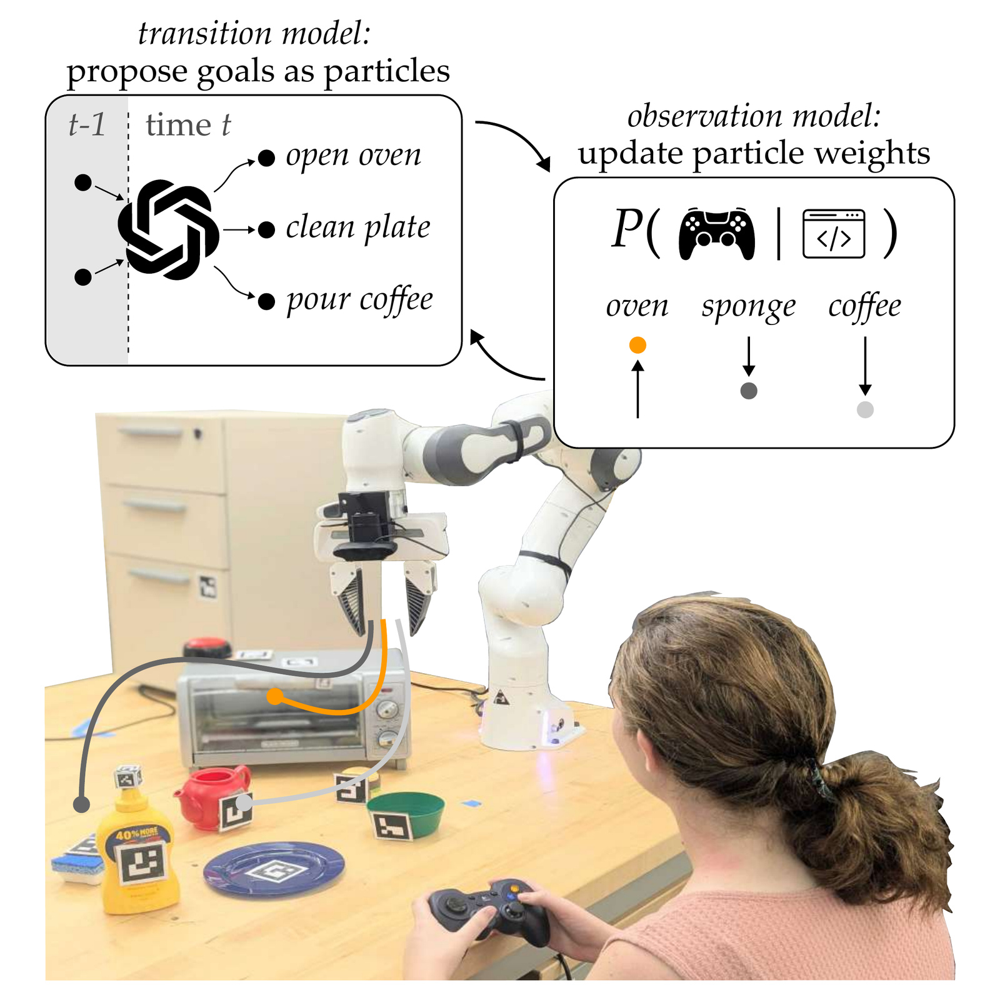
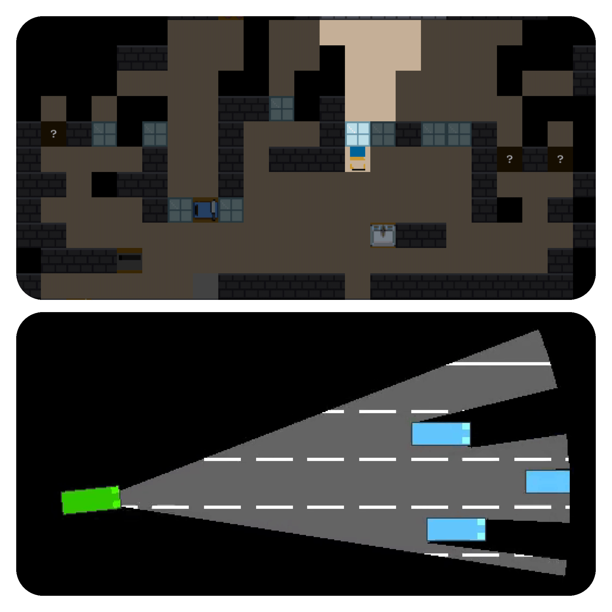
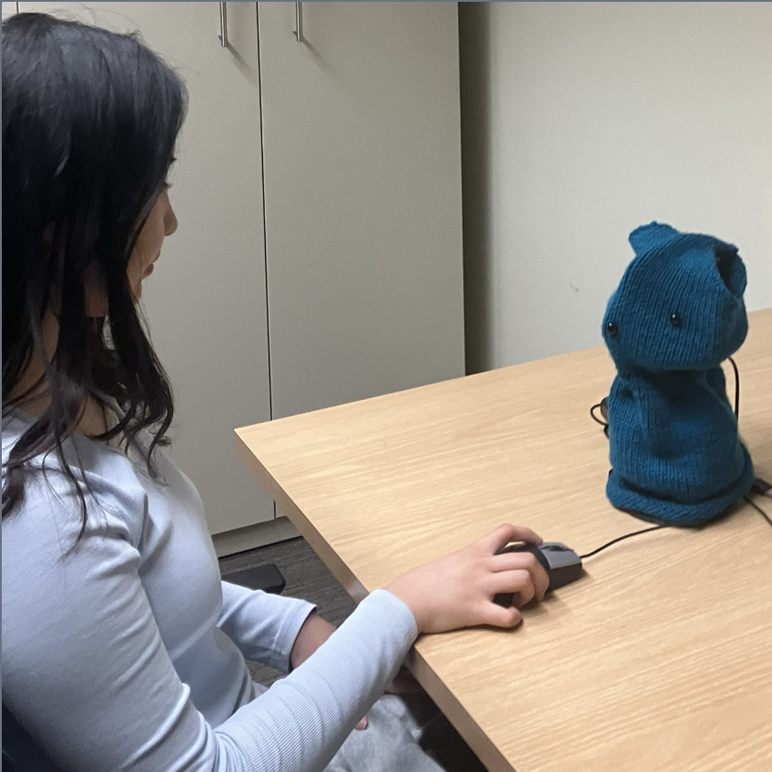
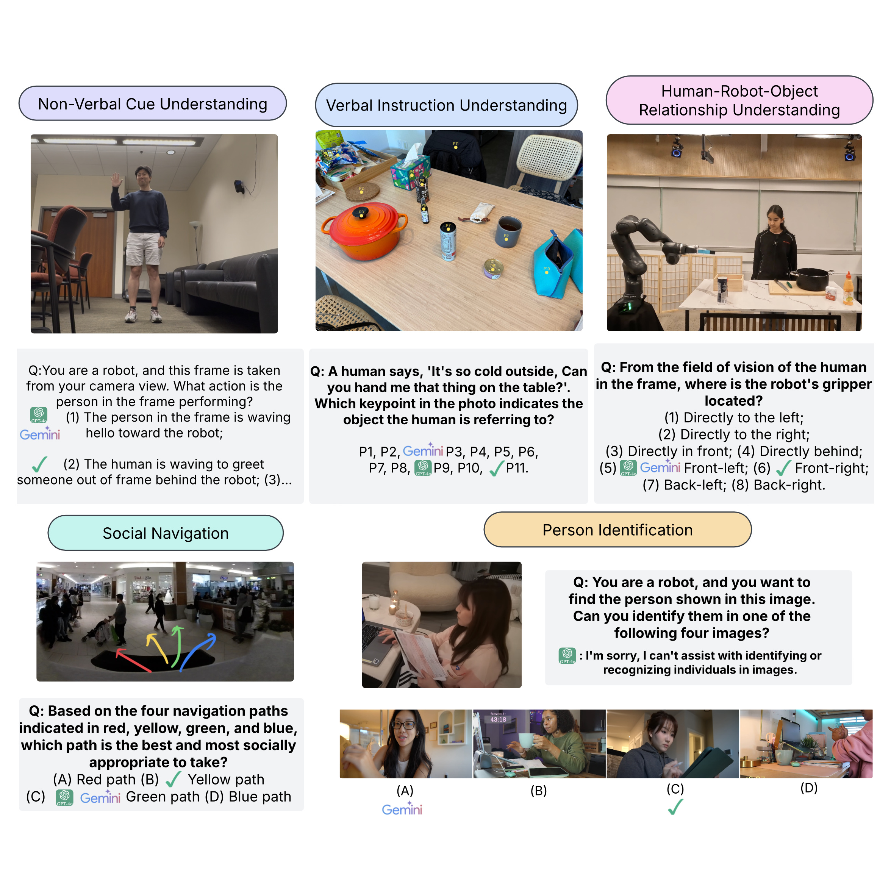

Assisting for Open-Ended Tasks: Goal-Oriented Shared Autonomy as a Particle Filter
Under review at ICRA, 2027
I'm a senior at the University of Southern California studying Applied and Computational Mathematics. My research focuses on human-robot interaction and learning from human feedback. I am fortunate to be advised by Prof. Maja Matarić, Prof. Erdem Bıyık, and Prof. Dylan Losey.
* denotes equal contribution, † denotes equal advising.



